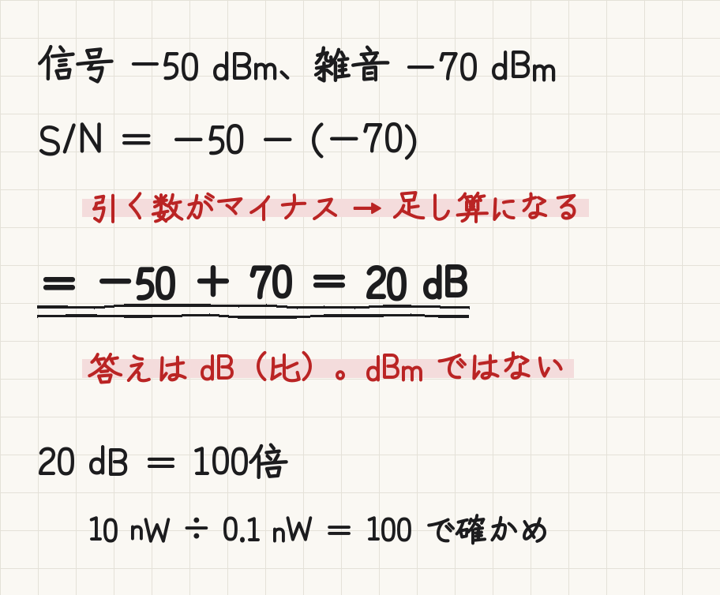

dBm の引き算：dBm − dBm の答えは、dB（比）になる
dBm から dBm を引いた答えは、dB です。dBm ではありません。信号が −50 dBm、雑音が −70 dBm なら、−50 − (−70) ＝ 20 dB で、信号は雑音の100倍です。dBm どうしは足せない、と覚えた後なので、引いてよいのかで手が止まります。
先に答えdBm − dBm は、W に戻さずにそのまま引けます。答えは2つの電力の比で、単位は dB です。マイナスの dBm を引くときは、符号を変えて足し算にします。
どこで止まるか
止まる段読み取りdBm どうしを引くと、基準の 1 mW が消えて比が残る、という読み方が示されないことが多くあります。
−50 dBm − (−70 dBm) を、−120 dBm と答えてしまう。符号を落としたうえ、単位も dBm のままです。
引くと 1 mW が消えて、比が残る
dBm は「1 mW の何倍か」を dB で表した量です。2つの dBm を引くと、どちらにも入っている「1 mW」が打ち消し合います。残るのは、2つの電力の比だけです。
−50 dBm ＝ 1 mW の 10−5 倍 ＝ 10 nW
−70 dBm ＝ 1 mW の 10−7 倍 ＝ 0.1 nW
10 nW ÷ 0.1 nW ＝ 100倍 ＝ 20 dB
−70 dBm ＝ 1 mW の 10−7 倍 ＝ 0.1 nW
10 nW ÷ 0.1 nW ＝ 100倍 ＝ 20 dB
足し算と違い、引き算はどの組み合わせでもできます。違うのは、答えの単位です。
| 組み合わせ | 引けるか | 答えの単位 |
|---|---|---|
| dBm − dBm | 引ける | dB（2つの電力の比） |
| dBm − dB | 引ける | dBm（電力から損失を引く） |
| dB − dB | 引ける | dB |
マイナスの dBm を引くとき
受信した電力や雑音は、1 mW より小さいので、マイナスの dBm で書かれます。マイナスの数を引くときは、符号を変えて足します。
−50 − (−70) ＝ −50 ＋ 70 ＝ 20
数値で確かめる
送信機の出力が 30 dBm、受信機に届いた電力が −60 dBm のとき、途中で失われた分（伝搬の損失）を求めます。
30 − (−60) ＝ 30 ＋ 60 ＝ 90 dB
確かめ：30 dBm は 1 W。90 dB は 109 倍なので、1 W ÷ 109 ＝ 1 nW ＝ 10−6 mW ＝ −60 dBm
確かめ：30 dBm は 1 W。90 dB は 109 倍なので、1 W ÷ 109 ＝ 1 nW ＝ 10−6 mW ＝ −60 dBm
答えは「何倍小さくなったか」なので、dB で書きます。

dBm の引き算のまとめ
dBm − dBm ＝ dB（2つの電力の比）
dBm − dB ＝ dBm
マイナスの数を引くときは、符号を変えて足す
dBm − dB ＝ dBm
マイナスの数を引くときは、符号を変えて足す
dBm どうしの足し算（W に戻して足す）は、dBm の足し算：30 dBm ＋ 30 dBm は、60 dBm ではなく 33 dBmで扱っています。
別の呼び方：S/N は、信号対雑音比（SN比）とも書かれます。信号の電力と雑音の電力の比を、dB で表した物です。
確かめの1問
受信した信号が −40 dBm、雑音が −75 dBm のとき、S/N は何 dB ですか。
受信した信号が −40 dBm、雑音が −75 dBm のとき、S/N は何 dB ですか。
答え
−40 − (−75) ＝ −40 ＋ 75 ＝ 35 dB。単位は dB です。紙の上で繰り返して固めたい方へ：書き込み式の問題集の案内 ／ 数を入れて確かめる：デシベルの計算の道具
最終更新：2026年11月20日